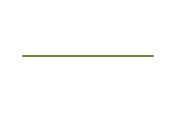

Relation role
has direct report
Recorded core meaning: Manager/lead to direct report in an organisational tree; direction is parent to child (like emb), so tree roots are nodes with no incoming reports_to edge.
reports_to
- Category
- relation
- Core binding
- RL57
- Semantic family
- governance

Connect with this role
connect Source to Target as reports_toSource and Target must already exist and satisfy the selected profile’s endpoint contract. Use the relation’s qualifiers for explicit semantic details.
Available in these profiles
Standard presentation values
{
"colour": "#526525",
"glyph": "people",
"width": 2,
"pattern": "",
"start": "none",
"end": "none",
"text_label": "has direct report",
"token_required_when_ambiguous": true
}Registered metadata fields
x_affinity, x_assignment, x_association_class, x_boundary, x_chen, x_compatibility, x_constraint, x_continuation, x_custody, x_detail_steps, x_diagram, x_endlabels, x_erp, x_evidence, x_exception, x_flow, x_fragment, x_genset, x_interrupt, x_link, x_message, x_nary, x_petri, x_protocol, x_reconciliation, x_record, x_report, x_requirement, x_return, x_rule, x_sdl, x_story, x_transition, x_tunnel, x_ui, x_usecase, x_workflow